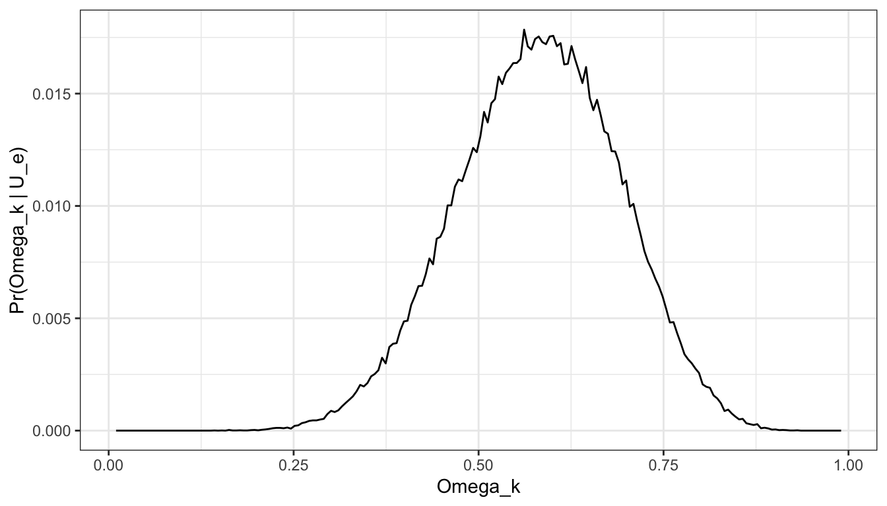

library(data.table)
library(ggplot2)
# contrived setup to make the scores for units ascend
# (lower values considered better)
d <- data.table(
i = 1:40, score = sort(rnorm(40, 0, 1)),
group = rep(1:2, each = 20)
)
d[, rank := 1:40]
n1 <- d[group == 1, .N]
n2 <- d[group == 2, .N]Mann-Whitney U
nonparametric
Overview
The MWU checks a rank sum difference between two independent groups and tests whether two groups have been drawn from the same population. It is an alternative to the t-test. But it only requires that the observations from both groups are at least ordinal such that you can discern for any two observations which one is greater (or better in some sense). In the classical interpretation, the test assumes that the distributions are identical under the null hypothesis and that they are not identical under the alternative distribution. Underlying the test is an interest in the probability that a randomly selected unit from one group fairs better than a randomly selected unit from the other. More concretely, the interest is int:
\[ \text{Pr}(X > Y) \ne \text{Pr}(Y > X) \]
and if this quantity exceeds \(0.5\) then, all things being equal, you would prefer assignment to the \(X\) group.
One approach to the procedure involves combining all the observations and ordering the records from best to worse (keeping track of which record belongs to which group). Each row is assigned a rank, the sum of the ranks is calculated for the first group (\(T_1\)) and the second group (\(T_2\)) and then the \(U\) statistics are computed as:
\[ \begin{aligned} U_1 &= n_1 n_2 + \frac{n_1(n_1 + 1)}{2} - T_1 \\ U_2 &= n_1 n_2 + \frac{n_2(n_2 + 1)}{2} - T_2 \\ \end{aligned} \]
the Mann-Whitney-U is given by \(U = \text{min}(U_1,U_2)\), which is the test statistic.
For example, say we have units 1 to 20 in the first group and units 21 to 40 in the second with all the units in the first group having a better score than the units in the second.
Now add up the ranks for both groups.
(T1 = d[group == 1, sum(rank)])[1] 210(T2 = d[group == 2, sum(rank)])[1] 610From these compute \(U_1\) and \(U_2\)
(U_1 = n1*n2 + n1*(n1+1)/2 - T1)[1] 400(U_2 = n1*n2 + n2*(n2+1)/2 - T2)[1] 0The above is equivalent to a pairwise comparison procedure (see later). From this, we can estimate the probability of superiority as referred to earlier (which I believe, but am not certain, is assuming that the two distributions differ only in location, not in shape) as:
# here the contrived setup says that the value of x_1 and x_2 also equate to their ranks
# and that lower values are better.
x_1 <- 1:20
x_2 <- 21:40
n_1 <- length(x_1)
n_2 <- length(x_2)
u_1 <- 0
u_2 <- 0
k <- 1
for(i in 1:length(x_1)){
for(j in 1:length(x_2)){
if(x_1[i] < x_2[j]) u_1 <- u_1 + 1
else if(x_1[i] > x_2[j]) u_2 <- u_2 + 1
k <- k + 1
}
}
sprintf("u1 = %.0f, Pr(X>Y) = %.2f, u2 = %.0f, Pr(Y>X) = %.2f", u_1, u_1/(n_1*n_2), u_2, u_2/(n_1*n_2))[1] "u1 = 400, Pr(X>Y) = 1.00, u2 = 0, Pr(Y>X) = 0.00"That is, for all possible pairwise combinations, we compare the value in the first group to each value in second group and add up how often X > Y and compute the probability estimate of \(\text(Pr)(X>Y)\) by simply dividing the number of occurrences by the total number of pairs.
For the test, we take the following reference points. First, under no difference, the expected value for \(U\) is
\[ \mathbb{E}[U] = \frac{n_1 n_2}{2} \]
with a standard standard error of:
\[ \sigma_U = \sqrt{\frac{n_1 n_2 (n_1 + n_2 + 1)}{12}} \]
Using these, you can compute a z-value using a normal approximation (for large samples > 20 per group) in the usual way by taking the observed value for \(U\) subtracting the expected value and dividing by the standard error:
\[ z = \frac{U - \mu_u}{\sigma_U} \]
and obtain a p-value for the test.
Alternative route to rank sums
As mentioned, an alternative way to derive the MWU is via a pairwise comparison procedure.
First, create a grid of all the possible pairwise comparisons for the two groups you are comparing (you are not restricted to two groups but just sticking to two for simplicity). For each pair, the values of \(U_1\) and \(U_2\) can be obtained by:
\[ \begin{aligned} U_1 &= \sum_{i = 1}^{n_1} \sum_{j = 1}^{n_2} \delta_{1}(i,j) \quad \text{where} \\ \delta_{1}(i, j) &= \begin{cases} 1, & \text{if} \quad x_{[i]} > y_{[j]} \\ 0, & \text{otherwise} \end{cases} \end{aligned} \]
and:
\[ \begin{aligned} U_2 &= \sum_{i = 1}^{n_1} \sum_{j = 1}^{n_2} \delta_{2}(i,j) \quad \text{where} \\ \delta_{2}(i, j) &= \begin{cases} 1, & \text{if} \quad y_{[i]} > x_{[j]} \\ 0, & \text{otherwise} \end{cases} \end{aligned} \]
(we might get to ties in a bit).
And then proceed as before.
Bayesian perspective
Recall that the \(U\) statistic can give an estimate of the probability that a randomly picked unit from the first group will be higher ranked than a randomly chosen unit from the second group. That is, we have \(\text{Pr}(X_e > X_c)\) where \(X_e\) denotes the random variable for the first group and \(X_c\) the second. This gives a way to think about the unknown population parameter(s) driving the data generation process. For a Bayesian perspective, we want a likelihood function to represent the MWU sample statistics for a given population parameter(s).
Chechile puts forward one option [1]. In brief, let \(X_e\) and \(X_c\) be continuous variates for the experimental and control group on a common support \([x_l, x_u]\) and denote the density of \(x\) for each group by \(f_e(x)\) and \(f_c(x)\) and let \(F_e(x)\) and \(F_c(x)\) be the corresponding CDFs. By definition, at any \(x\) the proportion of \(X_e\) values in the population that are greater than \(x\) is \(1 - F_e(x)\). Thus, the joint pdf that \(X_c=x\) and \(X_e\) is greater than or equal to \(x\) is \(f_c(x)[1 - F_e(x)]\). Integrating over the support gives:
\[ \Omega_e = \int_{x_l}^{x_u} f_c(x)(1 - F_e(x)) dx \]
where \(\Omega_e\) represents the degree to which \(X_e\) values exceed \(X_c\) values1 (and equivalent exists for \(\Omega_c\) but we also know that \(\Omega_c = 1 - \Omega_e\)). This quantity is a property of the entire collection for both groups, does not depend on any detailed property of the distributions and when both distributions are the same, can be shown to equal 0.5. Another way to define \(\Omega_e\) is a limit of the Mann-Whitney statistics, i.e.
\[ \Omega_e = \lim_{n \rightarrow \infty} \frac{U_e}{U_e + U_c} \]
The likelihood for a given (fixed) \(U_e\) conditional on \(n_e\), \(n_c\) and \(\Omega_e\) is unknown but can be approximated via a simulation procedure. Given the above form of \(\Omega_e\), we can use any convenient distribution so long as the value is matched to the actual population data-generation distribution. A pair of exponentially distributed variables prove to be suitable. Chechile asserts that this is a generalisable procedure for computing \(P(X < Y)\) when we cannot do so via other means but I have not personally seen any other applications of it.
The idea is as follows; if \(X_c\) has a density \(f_c(x) = e^{-x}\) and \(X_e\) has density \(f_e(x) = k_e e^{-k_e x}\) (\(F_e(x) = 1 - e^{-k_e x}\)) with \(x \in \mathbb{R}^+\) then \(\Omega_e = \frac{1}{1 + k_e}\) since:
\[ \begin{aligned} \Omega_e &= \int_0^\infty e^{-x} (1 - (1 - e^{-k_e x})) dx \\ &= \int_0^\infty e^{-x} e^{-k_e x} dx \\ &= \frac{1}{1 + k_e} \end{aligned} \]
thus, given any \(\Omega_e\), there are always two exponential random variables with the above densities where \(k_e = \frac{1-\Omega_e}{\Omega_e}\) from which we can obtain that value for \(\Omega_e\).
Say the true data generation processes for \(X_c\) and \(X_e\) had \(f_c(x) = x/50\) and \(f_e(x) = 3x^2/1000\) with a support \(x \in [0, 10]\) so that
\[ \begin{aligned} \Omega_e &= \int_0^{10} \frac{x}{50} \left( {1 - \int_0^x \frac{3r^2}{1000} dr} \right) dx \\ &= 1 - 2/5 = 3/5 \end{aligned} \]
implying that \(k_e = \frac{1-3/5}{3/5} = 2/3\) for our exponential pair.
The result underscores the idea that if you have knowledge of \(\Omega_e\) then you do not need to know the true population distribution of the groups of interest. Provided we can match \(\Omega_e\) then we are good, but we do not know what the true data generating process is.
Empirical support for this can be illustrated by approximating the distribution for the \(U_e\) statistics for given \(n_c\), \(n_e\) and \(\Omega_e\) by simulation. The simulation produces an empirical view of the distribution of \(U_e\) (i.e. the likelihood of interest) from the true data generating process and then attempts to approximate this distribution via the paired exponential procedure.
n_sim <- 1e5
# density functions, and inverse cdf (for simulating random draws)
f_c <- function(x){
x/50
}
f_e <- function(x){
(3*x^2)/1000
}
F_inv_c <- function(u){
sqrt(100 * u)
}
F_inv_e <- function(u){
(1000 * u)^(1/3)
}
c_sim <- F_inv_c(runif(n_sim))
e_sim <- F_inv_e(runif(n_sim))
# fixed
n_e <- 3
n_c <- 3
# for containing the distribution of e under the true
# vs paired exponential approximation.
# for n_e = 3, n_c = 3, u_e can be either 0, 1, 2, ..., 9
u_e_tru <- numeric(10)
u_e_alt <- numeric(10)
for(k in 1:n_sim){
# simulate from the true data generation process
e_sim <- F_inv_e(runif(n_e))
c_sim <- F_inv_c(runif(n_c))
# initialise test stat
u_e_1 <- 0
# pairwise comparisons
for(i in 1:n_c){
for(j in 1:n_e){
if(e_sim[i] > c_sim[j]) u_e_1 <- u_e_1 + 1
}
}
# exponential approximation based on knowledge of k_e
e_alt <- rexp(n_e, 2/3)
c_alt <- rexp(n_c, 1)
u_e_2 <- 0
for(i in 1:n_c){
for(j in 1:n_e){
if(e_alt[i] > c_alt[j]) u_e_2 <- u_e_2 + 1
}
}
u_e_tru[u_e_1+1] <- u_e_tru[u_e_1+1] + 1
u_e_alt[u_e_2+1] <- u_e_alt[u_e_2+1] + 1
}
# distribution of the number of times that e is better than c
rbind(
prop.table(u_e_tru),
prop.table(u_e_alt)
) [,1] [,2] [,3] [,4] [,5] [,6] [,7] [,8] [,9]
[1,] 0.02169 0.02537 0.05754 0.10784 0.12386 0.15270 0.17866 0.14731 0.08582
[2,] 0.02158 0.02540 0.05706 0.10861 0.12500 0.15292 0.17936 0.14424 0.08600
[,10]
[1,] 0.09921
[2,] 0.09983For small \(n\) we can approximate a discrete version of the posterior for \(\Omega_e\) using the above and assuming a uniform prior. In brief, the procedure is as follows:
- set values for \(n_e\), \(n_c\) and \(U_e\) of interest
- discretise \(\Omega\) to any desired level of granularity
- initialise a results matrix to zero with number of rows equal to the number of simulations and number of columns equal to the number of discrete values for \(\Omega\)
- for each simulation traverse all the discrete values and
- compute \(k_e\) based on the current value for \(\Omega\)
- generate \(n_e\) and \(n_c\) random draws from the pair of exponential distributions (the experimental arm parameterised with the current \(k_e\))
- compute the value for \(u_e\) based on the random draws just generated
- if the \(u_e\) generated equals the \(U_e\) reference value then set the corresponding results matrix index to 1
- go to the next value of \(\Omega\) until the highest value is reached
- repeat
This updates the results matrix from which we can calculate the number of times that each discrete value of \(\Omega\) produced a value matching the reference level of \(U_e\). The proportion of times that this occurred gives us a proxy for \(Pr(U_e | \Omega)\).
To compute the posterior, we adopt a diffuse prior with \(\text{Pr}(\Omega_k) = 1/n_k\) where \(n_k\) is the number of discrete values selected to represent \(\Omega\). Finally, we apply Bayes rule to obtain the posterior (which will be the same as the likelihood under the selected prior).
\[ \begin{aligned} Pr(\Omega_k | U_e) = \frac{Pr(U_e | \Omega_k) Pr(\Omega_k)}{\sum_{k\in K} Pr(U_e | \Omega_k) Pr(\Omega_k)} \end{aligned} \]
# same size for each group and reference value for u_e
n_e <- 12
n_c <- 12
u_e_ref <- 85
omega_k <- seq(0.01, 0.99, len = 200)
n_sim <- 1e5
n_k <- length(omega_k)
m_res <- matrix(0, nrow = n_sim, ncol = n_k)
l <- 1
k <- round(n_k/2)
for(l in 1:n_sim){
for(k in 1:n_k){
k_e = (1-omega_k[k]) / omega_k[k]
e_alt <- rexp(n_e, k_e)
c_alt <- rexp(n_c, 1)
# generate the proxy for the mann-whitney u
u_e <- 0
for(i in 1:n_c){
for(j in 1:n_e){
if(e_alt[i] > c_alt[j]) u_e <- u_e + 1
}
}
# did it match the u_e of interest?
if(u_e == u_e_ref){
m_res[l, k] <- 1
}
}
}
d_res <- data.table(
omega_k = omega_k,
pr_u_e = prop.table(colSums(m_res))
)
d_res[, pr_omega := 1/ n_k]
# compute posterior
d_res[, pr_omega_u_e := (pr_u_e * pr_omega)/ sum(d_res$pr_omega * d_res$pr_u_e)]From the results of the simulation, the posterior can be visualised and quantities such as \(Pr(\Omega > 0.5)\) can be computed as simple summaries. For example, \(Pr(\Omega > 0.5)\) = 0.7648603.
ggplot(d_res, aes(x = omega_k, pr_omega_u_e)) +
geom_line() +
scale_x_continuous("Omega_k") +
scale_y_continuous("Pr(Omega_k | U_e)") +
theme_bw()

For large samples, the above approach is clearly impractical and so Chechile offered an approximation of the likelihood for \(U_e\) using a modified binomail distribution
\[ \begin{aligned} Pr(U_e | \Omega_e) = \frac{\Gamma(n_a + n_b + 1)}{\Gamma(n_a + 1)\Gamma(n_b +1)} \Omega_e^{n_a} (1 - \Omega_e)^{n_b} \end{aligned} \]
(accomodating fractional \(n_a\), \(n_b\)) and with the parameters computed as (see the paper for the details):
\[ \begin{aligned} n_\alpha &= \hat{\Omega}\left( (2n_e n_c/(n_e + n_c)) (1.028 + 0.75 u_e / (n_e n_c)) + 2 \right) -1 \\ n_\beta &= \hat{1-\Omega}\left( (2n_e n_c/(n_e + n_c)) (1.028 + 0.75 u_e / (n_e n_c)) + 2 \right) -1 \\ \end{aligned} \]
and the value for \(\hat{\Omega}\) is set to \(u_e / n_e n_c\) (again, this is for large samples).
The prior is also taken to be a beta distribution and is stated to produce a posterior with a beta distribution. However, this doesn’t appear to be the full story for all cases and it is referring to the paper for the additional details is recommended.
References
1. Chechile R. A bayesian analysis for the mann-whitney statistic. Communications in Statistics. 2020;49:670–96.
Footnotes
The intuition for the above is that \(F_e(x)\) gives the probability that \(X_e\) is greater than a specific value of \(x\), and \(f_c(x) dx\) gives the probability that \(X_c\) falls in a small interval around \(x\). The product of these terms gives the probability that \(X_e > X_c\) for that small interval and thus integrating over all possible values of \(x\) gives the value we are after.↩︎